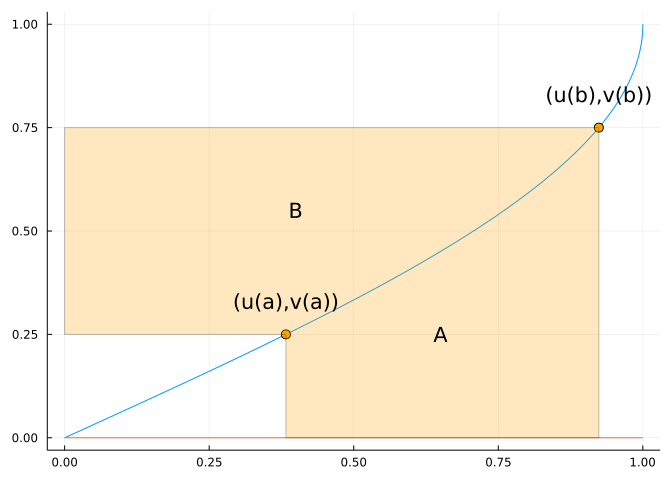

39 Integration By Parts
This section uses these add-on packages:
using CalculusWithJulia
using Plots
using SymPySo far we have seen that the derivative rules lead to integration rules. In particular:
- The sum rule \([au(x) + bv(x)]' = au'(x) + bv'(x)\) gives rise to an integration rule: \(\int (au(x) + bv(x))dx = a\int u(x)dx + b\int v(x))dx\). (That is, the linearity of the derivative means the integral has linearity.)
- The chain rule \([f(g(x))]' = f'(g(x)) g'(x)\) gives \(\int_a^b f(g(x))g'(x)dx=\int_{g(a)}^{g(b)}f(x)dx\). That is, substitution reverses the chain rule.
Now we turn our attention to the implications of the product rule: \([uv]' = u'v + uv'\). The resulting technique is called integration by parts.
The following illustrates integration by parts of the integral \((uv)'\) over \([a,b]\) original.
The figure is a parametric plot of \((u,v)\) with the points \((u(a), v(a))\) and \((u(b), v(b))\) marked. The difference \(u(b)v(b) - u(a)v(a) = u(x)v(x) \mid_a^b\) is shaded. This area breaks into two pieces, \(A\) and \(B\), partitioned by the curve. If \(u\) is increasing and the curve is parameterized by \(t \rightarrow u^{-1}(t)\), then \(A=\int_{u^{-1}(a)}^{u^{-1}(b)} v(u^{-1}(t))dt\). A \(u\)-substitution with \(t = u(x)\) changes this into the integral \(\int_a^b v(x) u'(x) dx\). Similarly, for increasing \(v\), it can be seen that \(B=\int_a^b u(x) v'(x) dx\). This suggests a relationship between the integral of \(u v'\), the integral of \(u' v\) and the value \(u(b)v(b) - u(a)v(a)\).
In terms of formulas, by the fundamental theorem of calculus:
\[ u(x)\cdot v(x)\big|_a^b = \int_a^b [u(x) v(x)]' dx = \int_a^b u'(x) \cdot v(x) dx + \int_a^b u(x) \cdot v'(x) dx. \]
This is re-expressed as
\[ \int_a^b u(x) \cdot v'(x) dx = u(x) \cdot v(x)\big|_a^b - \int_a^b v(x) \cdot u'(x) dx, \]
Or, more informally, as \(\int udv = uv - \int v du\).
This can sometimes be confusingly written as:
\[ \int f(x) g'(x) dx = f(x)g(x) - \int f'(x) g(x) dx. \]
(The confusion coming from the fact that the indefinite integrals are only defined up to a constant.)
How does this help? It allows us to differentiate parts of an integral in hopes it makes the result easier to integrate.
An illustration can clarify.
Consider the integral \(\int_0^\pi x\sin(x) dx\). If we let \(u=x\) and \(dv=\sin(x) dx\), then \(du = 1dx\) and \(v=-\cos(x)\). The above then says:
\[ \begin{align*} \int_0^\pi x\sin(x) dx &= \int_0^\pi u dv\\ &= uv\big|_0^\pi - \int_0^\pi v du\\ &= x \cdot (-\cos(x)) \big|_0^\pi - \int_0^\pi (-\cos(x)) dx\\ &= \pi (-\cos(\pi)) - 0(-\cos(0)) + \int_0^\pi \cos(x) dx\\ &= \pi + \sin(x)\big|_0^\pi\\ &= \pi. \end{align*} \]
The technique means one part is differentiated and one part integrated. The art is to break the integrand up into a piece that gets easier through differentiation and a piece that doesn’t get much harder through integration.
Examples
Consider \(\int_1^2 x \log(x) dx\). We might try differentiating the \(\log(x)\) term, so we set
\[ u=\log(x) \text{ and } dv=xdx \]
Then we get
\[ du = \frac{1}{x} dx \text{ and } v = \frac{x^2}{2}. \]
Putting together gives:
\[ \begin{align*} \int_1^2 x \log(x) dx &= (\log(x) \cdot \frac{x^2}{2}) \big|_1^2 - \int_1^2 \frac{x^2}{2} \frac{1}{x} dx\\ &= (2\log(2) - 0) - (\frac{x^2}{4})\big|_1^2\\ &= 2\log(2) - (1 - \frac{1}{4}) \\ &= 2\log(2) - \frac{3}{4}. \end{align*} \]
Example
This related problem, \(\int \log(x) dx\), uses the same idea, though perhaps harder to see at first glance, as setting dv=dx is almost too simple to try:
\[ \begin{align*} u &= \log(x) & dv &= dx\\ du &= \frac{1}{x}dx & v &= x \end{align*} \]
\[ \begin{align*} \int \log(x) dx &= \int u dv\\ &= uv - \int v du\\ &= (\log(x) \cdot x) - \int x \cdot \frac{1}{x} dx\\ &= x \log(x) - \int dx\\ &= x \log(x) - x \end{align*} \]
Were this a definite integral problem, we would have written:
\[ \int_a^b \log(x) dx = (x\log(x))\big|_a^b - \int_a^b dx = (x\log(x) - x)\big|_a^b. \]
Example
Sometimes integration by parts is used two or more times. Here we let \(u=x^2\) and \(dv = e^x dx\):
\[ \int_a^b x^2 e^x dx = (x^2 \cdot e^x)\big|_a^b - \int_a^b 2x e^x dx. \]
But we can do \(\int_a^b x e^xdx\) the same way:
\[ \int_a^b x e^x = (x\cdot e^x)\big|_a^b - \int_a^b 1 \cdot e^xdx = (xe^x - e^x)\big|_a^b. \]
Combining gives the answer:
\[ \int_a^b x^2 e^x dx = (x^2 \cdot e^x)\big|_a^b - 2( (xe^x - e^x)\big|_a^b ) = e^x(x^2 - 2x - 1) \big|_a^b. \]
In fact, it isn’t hard to see that an integral of \(x^m e^x\), \(m\) a positive integer, can be handled in this manner. For example, when \(m=10\), SymPy gives:
@syms 𝒙
integrate(𝒙^10 * exp(𝒙), 𝒙)
\[
\left(𝒙^{10} - 10 𝒙^{9} + 90 𝒙^{8} - 720 𝒙^{7} + 5040 𝒙^{6} - 30240 𝒙^{5} + 151200 𝒙^{4} - 604800 𝒙^{3} + 1814400 𝒙^{2} - 3628800 𝒙 + 3628800\right) e^{𝒙}
\]
The general answer is \(\int x^n e^xdx = p(x) e^x\), where \(p(x)\) is a polynomial of degree \(n\).
Example
The same technique is attempted for this integral, but ends differently. First in the following we let \(u=\sin(x)\) and \(dv=e^x dx\):
\[ \int e^x \sin(x)dx = \sin(x) e^x - \int \cos(x) e^x dx. \]
Now we let \(u = \cos(x)\) and again \(dv=e^x dx\):
\[ \int e^x \sin(x)dx = \sin(x) e^x - \int \cos(x) e^x dx = \sin(x)e^x - \cos(x)e^x - \int (-\sin(x))e^x dx. \]
But simplifying this gives:
\[ \int e^x \sin(x)dx = - \int e^x \sin(x)dx + e^x(\sin(x) - \cos(x)). \]
Solving for the “unknown” \(\int e^x \sin(x) dx\) gives:
\[ \int e^x \sin(x) dx = \frac{1}{2} e^x (\sin(x) - \cos(x)). \]
Example
Positive integer powers of trigonometric functions can be addressed by this technique. Consider \(\int \cos(x)^n dx\). We let \(u=\cos(x)^{n-1}\) and \(dv=\cos(x) dx\). Then \(du = (n-1)\cos(x)^{n-2}(-\sin(x))dx\) and \(v=\sin(x)\). So,
\[ \begin{align*} \int \cos(x)^n dx &= \cos(x)^{n-1} \cdot (\sin(x)) - \int (\sin(x)) ((n-1)\sin(x) \cos(x)^{n-2}) dx \\ &= \sin(x) \cos(x)^{n-1} + (n-1)\int \sin^2(x) \cos(x)^{n-1} dx\\ &= \sin(x) \cos(x)^{n-1} + (n-1)\int (1 - \cos(x)^2) \cos(x)^{n-2} dx\\ &= \sin(x) \cos(x)^{n-1} + (n-1)\int \cos(x)^{n-2}dx - (n-1)\int \cos(x)^n dx. \end{align*} \]
We can then solve for the unknown (\(\int \cos(x)^{n}dx\)) to get this reduction formula:
\[ \int \cos(x)^n dx = \frac{1}{n}\sin(x) \cos(x)^{n-1} + \frac{n-1}{n}\int \cos(x)^{n-2}dx. \]
This is called a reduction formula as it reduces the problem from an integral with a power of \(n\) to one with a power of \(n - 2\), so could be repeated until the remaining indefinite integral required knowing either \(\int \cos(x) dx\) (which is \(-\sin(x)\)) or \(\int \cos(x)^2 dx\), which by a double angle formula application, is \(x/2 - \sin(2x)/4\).
SymPy is quite able to do this repeated bookkeeping. For example with \(n=10\):
integrate(cos(𝒙)^10, 𝒙)
\[
\frac{63 𝒙}{256} + \frac{\sin{\left(𝒙 \right)} \cos^{9}{\left(𝒙 \right)}}{10} + \frac{9 \sin{\left(𝒙 \right)} \cos^{7}{\left(𝒙 \right)}}{80} + \frac{21 \sin{\left(𝒙 \right)} \cos^{5}{\left(𝒙 \right)}}{160} + \frac{21 \sin{\left(𝒙 \right)} \cos^{3}{\left(𝒙 \right)}}{128} + \frac{63 \sin{\left(𝒙 \right)} \cos{\left(𝒙 \right)}}{256}
\]
Example
The visual interpretation of integration by parts breaks area into two pieces, the one labeled “B” looks like it would be labeled “A” for an inverse function for \(f\). Indeed, integration by parts gives a means to possibly find antiderivatives for inverse functions.
Let \(uv = x f^{-1}(x)\). Then we have \([uv]' = u'v + uv' = f^{-1}(x) + x [f^{-1}(x)]'\). So, up to a constant \(uv = \int [uv]'dx = \int f^{-1}(x) + \int x [f^{-1}(x)]'\). Re-expressing gives:
\[ \begin{align*} \int f^{-1}(x) dx &= xf^{-1}(x) - \int x [f^{-1}(x)]' dx\\ &= xf^{-1}(x) - \int f(u) du.\\ \end{align*} \]
The last line follows from the \(u\)-substitution: \(u=f^{-1}(x)\) for then \(du = [f^{-1}(x)]' dx\) and \(x=f(u)\).
We use this to find an antiderivative for \(\sin^{-1}(x)\):
\[ \begin{align*} \int \sin^{-1}(x) dx &= x \sin^{-1}(x) - \int \sin(u) du \\ &= x \sin^{-1}(x) + \cos(u) \\ &= x \sin^{-1}(x) + \cos(\sin^{-1}(x)). \end{align*} \]
Using right triangles to simplify, the last value \(\cos(\sin^{-1}(x))\) can otherwise be written as \(\sqrt{1 - x^2}\).
Example
The trapezoid rule is an approximation to the definite integral like a Riemann sum, only instead of approximating the area above \([x_i, x_i + h]\) by a rectangle with height \(f(c_i)\) (for some \(c_i\)), it uses a trapezoid formed by the left and right endpoints. That is, this area is used in the estimation: \((1/2)\cdot (f(x_i) + f(x_i+h)) \cdot h\).
Even though we suggest just using quadgk for numeric integration, estimating the error in this approximation is still of some theoretical interest.
Recall, just using either \(x_i\) or \(x_{i-1}\) for \(c_i\) gives an error that is “like” \(1/n\), as \(n\) gets large, though the exact rate depends on the function and the length of the interval.
This proof for the error estimate is involved, but is reproduced here, as it nicely integrates many of the theoretical concepts of integration discussed so far.
First, for convenience, we consider the interval \(x_i\) to \(x_i+h\). The actual answer over this is just \(\int_{x_i}^{x_i+h}f(x) dx\). By a \(u\)-substitution with \(u=x-x_i\) this becomes \(\int_0^h f(t + x_i) dt\). For analyzing this we integrate once by parts using \(u=f(t+x_i)\) and \(dv=dt\). But instead of letting \(v=t\), we choose to add - as is our prerogative - a constant of integration \(A\), so \(v=t+A\):
\[ \begin{align*} \int_0^h f(t + x_i) dt &= uv \big|_0^h - \int_0^h v du\\ &= f(t+x_i)(t+A)\big|_0^h - \int_0^h (t + A) f'(t + x_i) dt. \end{align*} \]
We choose \(A\) to be \(-h/2\), any constant is possible, for then the term \(f(t+x_i)(t+A)\big|_0^h\) becomes \((1/2)(f(x_i+h) + f(x_i)) \cdot h\), or the trapezoid approximation. This means, the error over this interval - actual minus estimate - satisfies:
\[ \text{error}_i = \int_{x_i}^{x_i+h}f(x) dx - \frac{f(x_i+h) -f(x_i)}{2} \cdot h = - \int_0^h (t + A) f'(t + x_i) dt. \]
For this, we again integrate by parts with
\[ \begin{align*} u &= f'(t + x_i) & dv &= (t + A)dt\\ du &= f''(t + x_i) & v &= \frac{(t + A)^2}{2} + B \end{align*} \]
Again we added a constant of integration, \(B\), to \(v\). The error becomes:
\[ \text{error}_i = -(\frac{(t+A)^2}{2} + B)f'(t+x_i)\big|_0^h + \int_0^h (\frac{(t+A)^2}{2} + B) \cdot f''(t+x_i) dt. \]
With \(A=-h/2\), \(B\) is chosen so \((t+A)^2/2 + B = 0\), or \(B=-h^2/8\). The error becomes
\[ \text{error}_i = \int_0^h \left(\frac{(t-h/2)^2}{2} - \frac{h^2}{8}\right) \cdot f''(t + x_i) dt. \]
Now, we assume the \(\lvert f''(t)\rvert\) is bounded by \(K\) for any \(a \leq t \leq b\). This will be true, for example, if the second derivative is assumed to exist and be continuous. Using this fact about definite integrals \(\lvert \int_a^b g dx\rvert \leq \int_a^b \lvert g \rvert dx\) we have:
\[ \lvert \text{error}_i \rvert \leq K \int_0^h \lvert (\frac{(t-h/2)^2}{2} - \frac{h^2}{8}) \rvert dt. \]
But what is the function in the integrand? Clearly it is a quadratic in \(t\). Expanding gives \(1/2 \cdot (t^2 - ht)\). This is negative over \([0,h]\) (and \(0\) at these endpoints, so the integral above is just:
\[ \frac{1}{2}\int_0^h (ht - t^2)dt = \frac{1}{2} (\frac{ht^2}{2} - \frac{t^3}{3})\big|_0^h = \frac{h^3}{12} \]
This gives the bound: \(\vert \text{error}_i \rvert \leq K h^3/12\). The total error may be less, but is not more than the value found by adding up the error over each of the \(n\) intervals. As our bound does not depend on the \(i\), we have this sum satisfies:
\[ \lvert \text{error}\rvert \leq n \cdot \frac{Kh^3}{12} = \frac{K(b-a)^3}{12}\frac{1}{n^2}. \]
So the error is like \(1/n^2\), in contrast to the \(1/n\) error of the Riemann sums. One way to see this, for the Riemann sum it takes twice as many terms to half an error estimate, but for the trapezoid rule only \(\sqrt{2}\) as many, and for Simpson’s rule, only \(2^{1/4}\) as many.
39.2 Questions
Question
In the integral of \(\int \log(x) dx\) we let \(u=\log(x)\) and \(dv=dx\). What are \(du\) and \(v\)?
Question
In the integral \(\int \sec(x)^3 dx\) we let \(u=\sec(x)\) and \(dv = \sec(x)^2 dx\). What are \(du\) and \(v\)?
Question
In the integral \(\int e^{-x} \cos(x)dx\) we let \(u=e^{-x}\) and \(dv=\cos(x) dx\). What are \(du\) and \(v\)?
Question
Find the value of \(\int_1^4 x \log(x) dx\). You can integrate by parts.
Question
Find the value of \(\int_0^{\pi/2} x\cos(2x) dx\). You can integrate by parts.
Question
Find the value of \(\int_1^e (\log(x))^2 dx\). You can integrate by parts.
Question
Integration by parts can be used to provide “reduction” formulas, where an antiderivative is written in terms of another antiderivative with a lower power. Which is the proper reduction formula for \(\int (\log(x))^n dx\)?
Question
The Wikipedia page has a rule of thumb with an acronym LIATE to indicate what is a good candidate to be “\(u\)”: Log function, Inverse functions, Algebraic functions (\(x^n\)), Trigonmetric functions, and Exponential functions.
Consider the integral \(\int x \cos(x) dx\). Which letter should be tried first?
Consider the integral \(\int x^2\log(x) dx\). Which letter should be tried first?
Consider the integral \(\int x^2 \sin^{-1}(x) dx\). Which letter should be tried first?
Consider the integral \(\int e^x \sin(x) dx\). Which letter should be tried first?
Question
Find an antiderivative for \(\cos^{-1}(x)\) using the integration by parts formula.